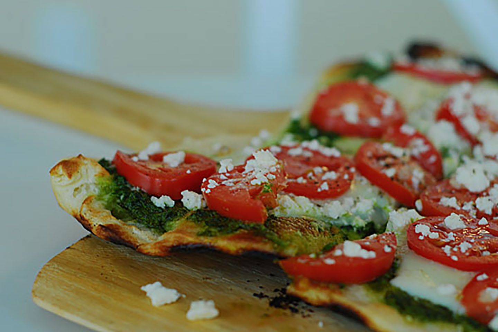

Homemade Pesto Pizza

Description
If you are trying to change things up from your ordinary pizza, take a shot with this recipe for
Pesto Pizza !
Ingredients
- 1 pre-baked pizza crust (12 inch)
- 1⁄2 cup Pesto
- 1 ripe tomato (chopped)
- 1⁄2 cup Green Bell Pepper (chopped)
- 1 (2 oz) can chopped Black Olives (drained)
- 1⁄2 small red onion (chopped)
- 1 (4 oz) can Artichoke Hearts (drained and sliced)
- 1 cup crumbled Feta Cheese
Directions
- Preheat oven to 450 degrees F (230 degrees C
- Spread pesto onto pizza crust
- Top with tomatoes, bell peppers, olives, red onions, artichoke hearts and feta cheese
- Bake for 8 to 10 minutes or until cheese is melted and browned
- ENJOY!
Home Page